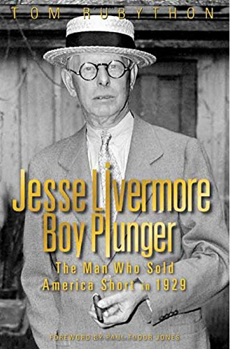

2014年，英国出版社The Myrtle Press推出了《Jesse Livermore - Boy Plunger: The Man Who Sold America Short in 1929》，初版400页，序言作者是对冲基金经理保罗·都铎·琼斯（Paul Tudor Jones）。作者汤姆·鲁比松（Tom Rubython）出身英国商业新闻界，曾创办并主编《BusinessAge》《Sunday Business》《EuroBusiness》等多份商业刊物，后转向人物传记写作，代表作是关于赛车手埃尔顿·塞纳（Ayrton Senna）的《Life of Senna》——第三方赛车手传记中销量最高的一本，卖出逾十万册——以及关于赛车手詹姆斯·亨特（James Hunt）的《Shunt》，后者被朗·霍华德改编为电影《极速风流》（Rush）。《Boy Plunger》是他转向金融人物后的长篇传记，使用新闻档案、经纪记录和家族材料重新梳理利弗莫尔的一生。
书中最具体的段落之一，是利弗莫尔如何在1906年旧金山大地震后做空联合太平洋铁路（Union Pacific）：消息刚传来，他没有丝毫犹豫地大举做空，即便华尔街当时的第一反应是维持原价，这笔交易最终为他带来25万美元的利润。真正的高潮当然是1929年：鲁比松书中写道，利弗莫尔当年动用逾百名经纪人分散操作以掩盖仓位，到9月账面已浮亏600万美元，但他没有平仓，等到10月"黑色星期一"与"黑色星期二"崩盘降临时，他持有的空头头寸市值高达4.5亿美元，最终套现超过1亿美元——按通胀调整后，这仍被认为是个人在七天内赚到的最高金额。但鲁比松没有把叙事停在这里：1930年到1934年间，这1亿美元财富被他悉数亏光，第二次宣告破产。书中还专辟章节追溯利弗莫尔的后代——他本人于1940年11月28日在纽约谢里-荷兰酒店（Sherry-Netherland Hotel）衣帽间开枪自尽，多年后他的儿子小杰西·利弗莫尔（Jesse Livermore Jr.）与孙子杰西·利弗莫尔三世同样以自杀结束生命，三代人的悲剧构成了鲁比松笔下这部传记区别于埃德温·勒费弗尔（Edwin Lefèvre）虚构体《股票作手回忆录》之处——后者成书于1923年，利弗莫尔本人尚在世，勒费弗尔无从得知这段收梢。
金融博客The Reformed Broker的作者、Ritholtz Wealth Management联合创始人乔什·布朗（Joshua M. Brown）在2016年8月的一篇文章中写道，自己入行之初就被前辈塞了一本《股票作手回忆录》，"读吧，它能解释一切"，但如今他认为鲁比松"考据详尽的《Boy Plunger》"（exhaustively researched Boy Plunger）提供了"更宽广、更贴切的视角，去看这位史上最伟大也最悲剧的操盘手"（a broader, more salient look at the greatest and most tragic trader of all time），并称此书"是我读过的关于市场历史与交易者心理最好的作品之一"（one of the best things I've ever read about market history and trader psychology）。序言作者保罗·都铎·琼斯的渊源更直接：他职业生涯始于利弗莫尔早年经纪商E.F. Hutton，入行时被要求人手一册《股票作手回忆录》，1987年10月19日"黑色星期一"，他复用利弗莫尔1907年与1929年做空的策略，据称当天净值翻了三倍。琼斯在序言中写道，利弗莫尔"讲述自己如何赚到数百万美元的故事，对一个刚踏入金融业的年轻人来说，其冲击力不亚于'性、毒品与摇滚乐'"（His stories of making millions, were the financial equivalent of "sex, drugs and rock 'n roll" to a young man at the advent of his financial career）。财经媒体Master Investor的书评人扎克·米尔（Zak Mir）2014年11月的评论则更看重这本书呈现的失控一面：他写道，利弗莫尔的自杀消息传出时，"华尔街被震得如同当年旧金山地震一般剧烈"。
这本书没有中文译本，目前也没有交易法则可以照搬——它甚至无意提供方法论，鲁比松感兴趣的是一个人如何两次赚到别人一生赚不到的财富，又两次把它亏光，最终连亏损的能力也丧失殆尽。对读惯了《股票作手回忆录》里那位冷静复盘、金句频出的"作手"的读者，《Boy Plunger》补上的是账本之外的部分：经纪商记录、家族档案与三代人的结局，让"永远做对趋势"的传奇多了一层无法被总结成规则的重量。